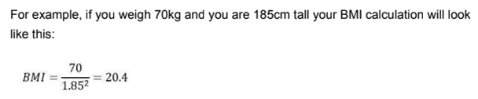

User Manual of BMI Calculator

Body Mass Index is a simple calculation using a person's height and weight. Body mass index (BMI) is a value derived from the mass (weight) and height of a person. The BMI is defined as the body mass divided by the square of the body height, and is expressed in units of kg/m2, resulting from mass in kilograms and height in meters.
The BMI may be determined using a table or chart which displays BMI as a function of mass and height using contour lines or colors for different BMI categories, and which may use other units of measurement (converted to metric units for the calculation).
When used to predict an individual’s health, rather than as a statistical measurement for groups, the BMI has limitations that can make it less useful than some of the alternatives, especially when applied to individuals with abdominal obesity, short stature, or unusually high muscle mass.
The Importance of knowing your Body Mass Index (BMI)
Your BMI is a measurement that is a ratio of your weight and height. It’s a good way to gauge whether your weight is in healthy proportion to your height. In fact, knowing your BMI can help you — and your GP — determine any health risks you may face if it's outside of the healthy range.
How to calculate your BMI?
Simply divide your weight in kilograms by your height in meter squared.
Example of Calculating BMI
Average BMI for Children

Average BMI for Children
Body mass index is interpreted a bit differently in children than in adults, as they’re still growing and mature at different rates. Instead of having just one set range of healthy BMIs, it’s necessary to check a BMI-for-age chart to check whether the BMI is between the 5th and 85th percentile for that age group.
For boys and girls between 2 and 7 years old, the average BMI is somewhere between 16 and 17 as of 2010, depending on age and gender, but the range of what is healthy is broader than this.
For example, a 5-year-old boy is considered healthy with a BMI from 13.8 and 17. The average BMI for an 8-year-old boy is 17.9, and girls of the same age have an average BMI of 18.3. By the age of 12, the average BMI for both girls and boys is 21.3, with a healthy range of about 15 to 21.8 for boys and 14.8 to 22.5 for girls.
Average BMI for Adolescents

Average BMI for Adolescents
Because teenagers are still going through puberty and growing, they can be healthy even if their BMI falls a bit outside what’s considered healthy for an adult. The average BMI for a 13-year-old boy is 21.9;
For a girl of the same age it’s slightly higher, at 22.1, The healthy BMI range for 13-year-olds is 15.5 to 22.6 for boys and 15.3 to 23.3 for girls. By the age of 18, the average BMI for a boy is 26.1, and for a girl, it’s 24.6. The healthy range is 18.2 to 26.3 for boys and 17.6 to 26.1 for girls.
Average BMI for Adults

Average BMI for Adults
For adults, the healthy BMI range is from 18.5 to 24.9, regardless of age or gender, and anything over this means you are considered overweight for your height.
The average BMI for women age 20 and older is 28.7. Women 80 years and older have the lowest average BMI, at 26.7, followed by those between 20 and 29 years old, at 27.5, and women from 60 to 69 have the highest, at 29.6. For men, the average BMI for those 20 and older is 28.6, with the lowest average in the 20-to-29-year age group, at 26.8, and the highest in the 60-to-69-year age group, at 29.5. These average BMIs all fall within the overweight classification, meaning the average American adult is overweight.
Health risks with Low and High BMI
Being overweight can lead to a range of chronic conditions including:
Being underweight can result in other health issues like:
What does the BMI tells you?
BMI is a way to figure out your approximate level of body fat in an easy, inexpensive way. It’s a number based on your weight and height that can help you tell if you are at a healthy weight for your height.
What is a good BMI result?
18.5–24.9 BMI is considered healthy
How Do you analyze BMI?
By using our app: CountMyCrunch (Will be soon available in the play store).
What are the ways to reduce BMI?
Get more sleep
You’re not just grumpy when you don’t get enough sleep. Research has found that a lack of sleep can lead to weight gain, too. Getting enough shut-eye helps prevent weight gain that results from late-night snacking and lets the body actively burn more calories. Aim for eight to nine hours of sleep every night to maintain a healthy weight and improve your well-being. Get tips on how to get a better night’s sleep.
Watch your calories
To lower your BMI, you need to consume fewer calories than you burn. Don’t get overwhelmed. Start by lowering your calories by 500 each day, which can result in about a pound of weight loss per week. One way to do that is to not eat in front of the television. Research from the University of Massachusetts found that you’ll eat up to 288 calories more while watching TV. Instead, eat at the table and trade one hour of TV for a casual walk. Combined, you’ll burn 527 calories.
Keep a food diary
Record everything you drink and eat. Many apps and websites can help, or you can use tried-and-true pen and paper. Note trouble spots that you will need to address, like that mid-afternoon snack. This process will make you feel more accountable for what you eat every day. You may think you’re eating healthy. But writing down every bite makes you aware of those extra calories you consume without even realizing it. Just an extra handful of nuts could cost you more than 100 calories.
Make hydration
fun Drinking ice-cold water can help you burn more calories throughout the day, according to a study published in the Journal of Clinical Endocrinology and Metabolism — up to 490 calories a week! Other research shows that drinking water before a meal can help you eat less. Just monitor how much you’re guzzling down. Consider buying a reusable water bottle that’s at least 20 fluid ounces. That way you know exactly how much water it holds, and you can refill it as many times as you need to do so. Add fresh lemon, cucumber, mint or any other fruit or veggie. Not only does it make the flavor more interesting, but you’re more likely to drink it when you take the time to do something special.
Become more active
Dieting will only take you so far. Exercise helps you build lean muscle tissue and lose more fat, which helps change your body composition. Get more active. It doesn’t take much. Take the stairs instead of the elevator, walk to work if possible, ride a bike, play outdoors with the kids or walk the dog.